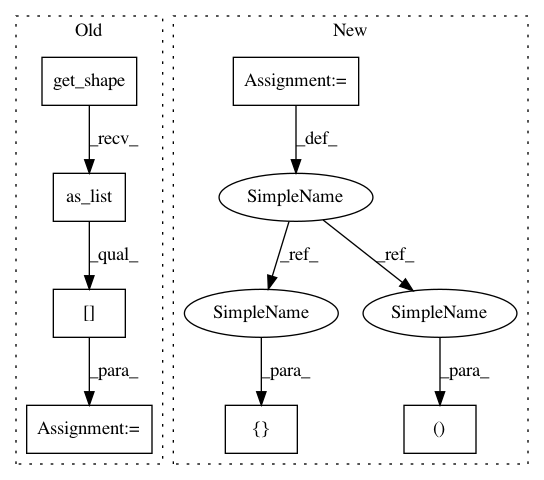

8ba829009b119625db5fe3ca9ae5389454c12c7f,cleverhans/attacks.py,SaliencyMapMethod,generate,#SaliencyMapMethod#Any#,477
Before Change
// Define Jacobian graph wrt to this input placeholder
preds = self.model.get_probs(x)
nb_classes = preds.get_shape().as_list()[-1]
grads = jacobian_graph(preds, x, nb_classes)
// Define appropriate graph (targeted / random target labels)
if self.y_target is not None:
After Change
return result
labels, nb_classes = self.get_or_guess_labels(x, kwargs)
self.y_target = tf.py_func(random_targets, [labels], tf.float32)
self.y_target.set_shape([None, nb_classes])
return jsma(x, model=self.model, y_target=self.y_target,
In pattern: SUPERPATTERN
Frequency: 3
Non-data size: 7
Instances
Project Name: tensorflow/cleverhans
Commit Name: 8ba829009b119625db5fe3ca9ae5389454c12c7f
Time: 2017-11-24
Author: zhi.li.gz@gmail.com
File Name: cleverhans/attacks.py
Class Name: SaliencyMapMethod
Method Name: generate
Project Name: tensorflow/models
Commit Name: 1ea84b7fa9a03781d22837f91683462d823202ea
Time: 2020-11-24
Author: gardener@tensorflow.org
File Name: research/object_detection/predictors/heads/class_head.py
Class Name: WeightSharedConvolutionalClassHead
Method Name: predict
Project Name: tensorflow/models
Commit Name: 1ea84b7fa9a03781d22837f91683462d823202ea
Time: 2020-11-24
Author: gardener@tensorflow.org
File Name: research/object_detection/predictors/heads/keras_class_head.py
Class Name: WeightSharedConvolutionalClassHead
Method Name: _predict